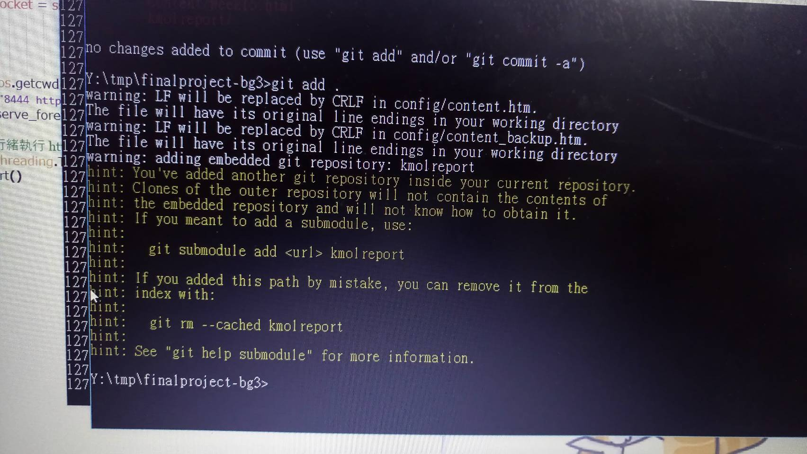

Week14 << Previous Next >> Week16
Week15
課程內容 :
說明如何將 MCAD 設計繪圖零組件轉進 V-rep，並設定 IK 運算
說明如何利用 Markdown、pandoc 與 LaTeX，建立協同期末報告
心得 :
這週在推上課的影片時，在 add 後出現了以下文字

因為是第一次看到，與組員討論過後才知道有其他組也出現過，但 push 後發現網頁跑不出來，所以我決定重新做過，然後再重推一次，第二次 add 後就恢復正常了， push 後網頁也沒問題。
Week14 << Previous Next >> Week16